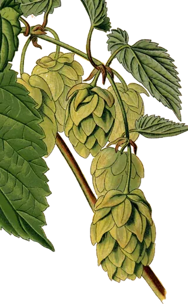
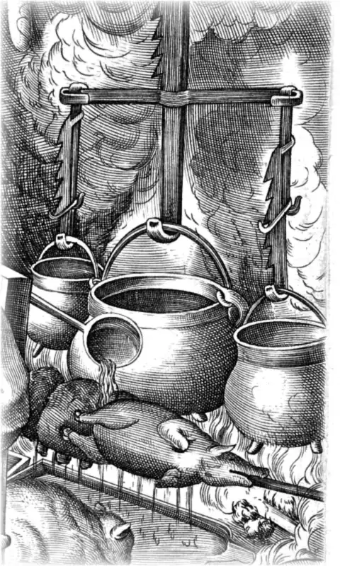
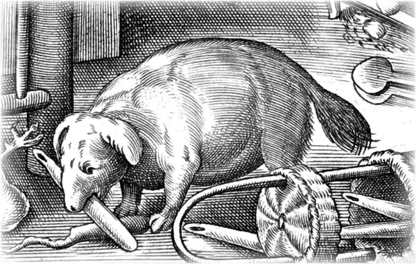
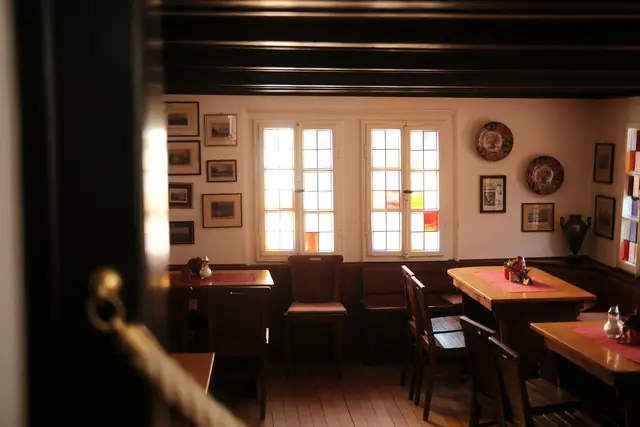
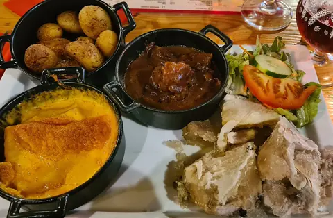

L’ardoise de ’t Kanneke : Cette semaine à l’ardoise
Cuisine du Nord faite maison, servie midi et soir.
-
Mardi
Coq à la bière, chicons braisés
14,50 €
En dessert : tarte au sucre
-
Mercredi
Hochepot de joue de bœuf aux légumes d’hiver
14,50 €
En dessert : riz au lait à la cassonade
-
Jeudi
Lapin aux pruneaux et à la bière brune
14,50 €
En dessert : crème brûlée à la chicorée
-
Vendredi
Waterzoï de cabillaud aux crevettes grises
15,50 €
En dessert : gaufre fourrée à la vergeoise
-
Samedi
Jambonneau à la bière, purée au maroilles
16,50 €
En dessert : tarte aux pommes et spéculoos
-
Dimanche
Poulet rôti du dimanche, frites maison
15,50 €
En dessert : merveilleux au chocolat
-
Lundi
Le lundi, on ferme : la cuisine se repose.
Le midi, du mardi au vendredi : entrée + plat ou plat + dessert, 18,50 €.
Toute la semaine :
Règlement de la maison
- Art. 1Ici, tout est fait maison. La carbonade mijote quatre heures, le potjevleesch prend une nuit, les frites sont coupées le matin.
- Art. 2Les frites cuisent à la graisse de bœuf, comme il se doit. Végétariens : demandez les pommes grenaille, elles sont cuites à part.
- Art. 3Les chiens sont les bienvenus. Ils ont leur gamelle d’eau, mais pas de saucisse.

- Art. 4Grenouille, billard Nicolas, toptafel : les jeux flamands se demandent au comptoir. Le perdant paie la chicorée.
- Art. 5On réserve par téléphone. Si l’on ne vient pas, on prévient : la table fera plaisir à d’autres.
- Art. 6Les enfants ont leur menu jusqu’à 10 ans, une chaise haute et des crayons.
- Art. 7Cartes et titres-restaurant acceptés, même pour un café.
La direction


Fêtes & groupes
La salle du haut, 24 places, se privatise du mardi au jeudi soir et le dimanche midi. Menus de groupe à partir de 29 €.
Faire une demande